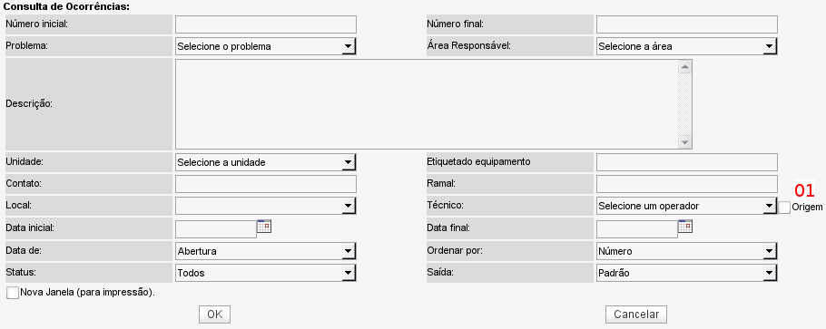
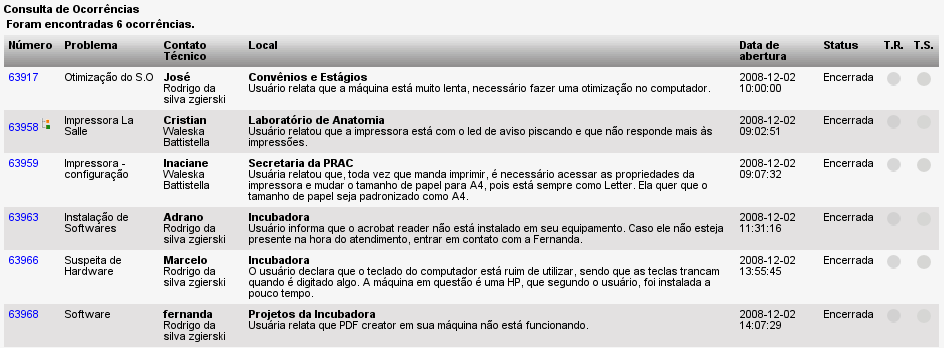

Consultar ocorrências (Ocorrências -> Consultar)
Nessa tela é possível pesquisar por ocorrências a partir de uma série de critérios para filtro.

Tela de consulta de ocorrências - versão 2.0rc3
A maioria das opções de filtro são de fácil entendimento, portanto será explicada aqui apenas a opção marcada como "01", pois não é tão óbvia quanto as demais.
Ao selecionar um técnico/operador no filtro da consulta, serão retornados os chamados que tiverem como técnico mais recente o técnico selecionado no filtro. Quando marcamos a opção "Origem", serão retornados os chamados que foram abertos no sistema pelo técnico/operador selecionado.

Tela de retorno de uma consulta - versão 2.0rc3